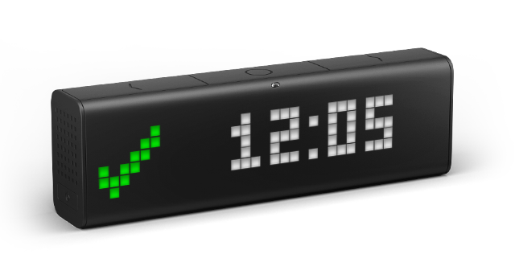
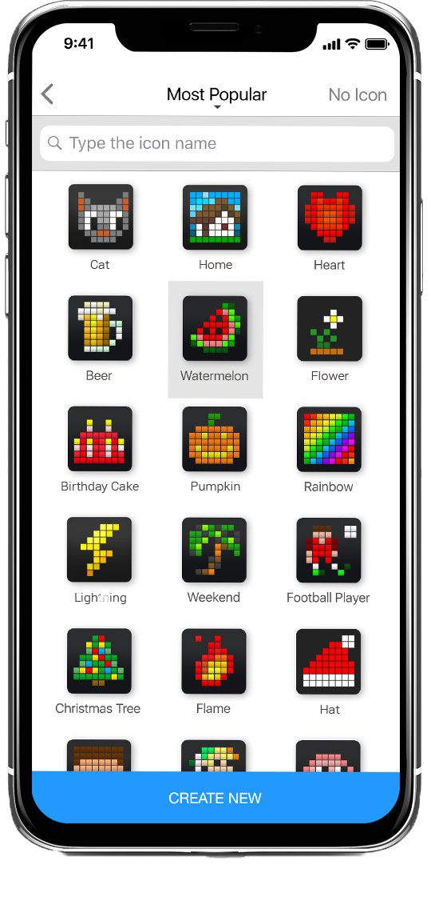
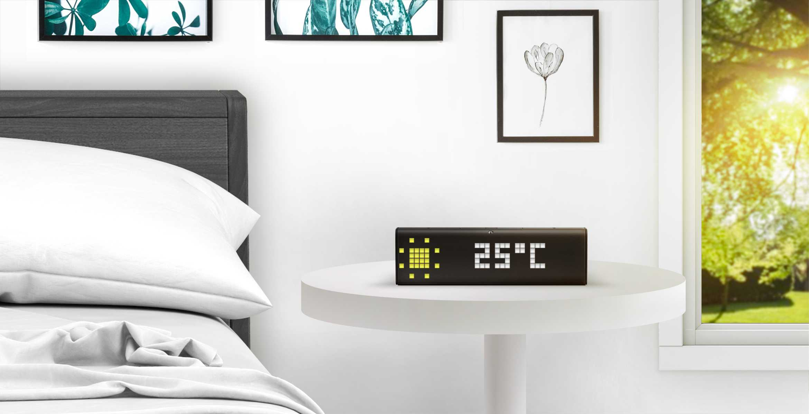
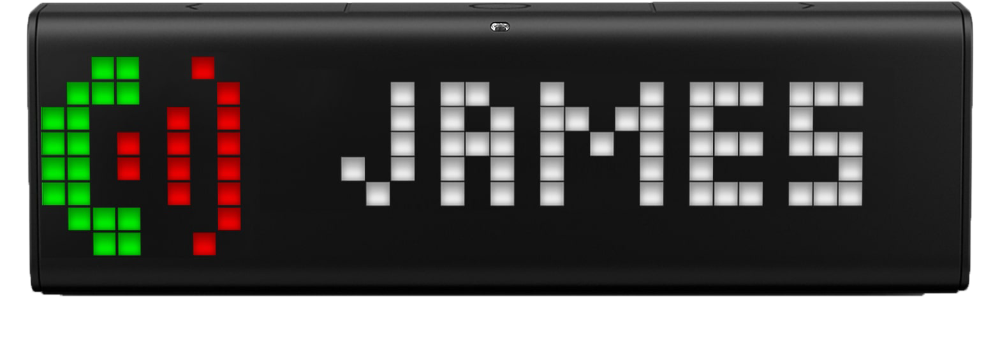
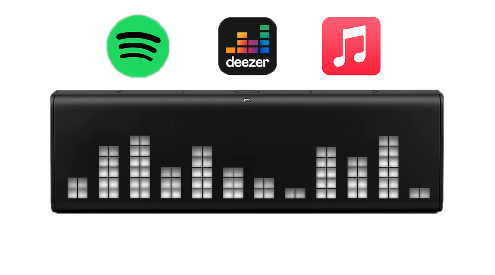

Une horloge connectée pour une maison intelligente

Personnaliser son environnement selon son humeur

Modifier votre intérieur avec LaMetric Time connectée au Wifi.
Impressionnez vos invités.
Parcourez des milliers de faces de cadrans dans notre catalogue ou créez la votre.
Les applications connectées


Obtenez des applications sur votre LaMetric Time en la connectant votre smartphone.
Ajoutez un calendrier, la météo, vos messages, vos appels, vos réveils...
Visualisez votre musique

Écoutez vos musiques sur votre LaMetric Time
grâce aux applications Spotify, Deezer ou encore Apple Music.
Et profitez des effets visuels !